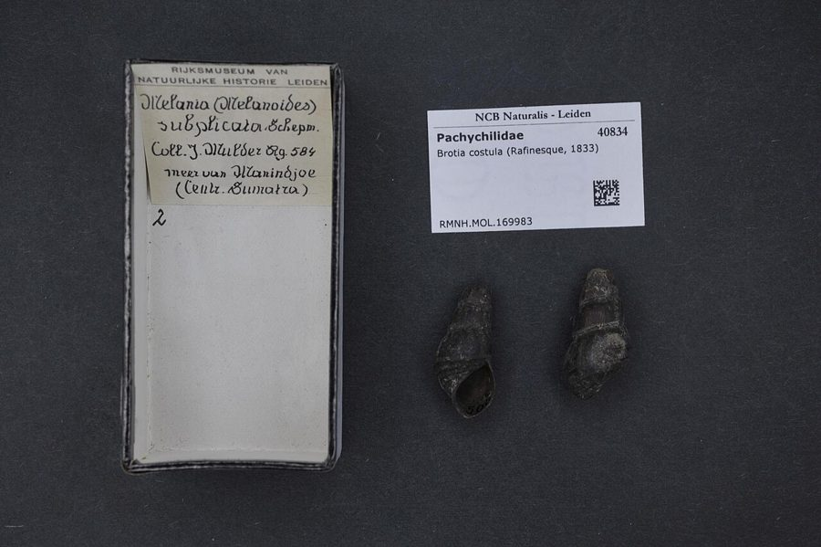

नदी घोंघाRiver Snail
Brotia costula · Thiaridae · MOL-0012

- Scientific nameवैज्ञानिक नाम
- Brotia costula (Lea, 1841)
- Familyकुल
- Thiaridae
- Hindiहिंदी
- नदी घोंघा
- Local namesस्थानीय नाम
- nadi ghongha, river snail, brotia, nadi pani ka ghongha
- Status hereयहाँ की स्थिति
- native
- Movementआवागमन
- Resident, here all year
- IUCNIUCN
- not evaluated
- Reviewसमीक्षा
- audited and independently read
When to look कब देखें
Present all year.साल भर मौजूद।
Uses and possibilities उपयोग और संभावनाएँ
Drawn from the documented uses in the profile below, where each is labelled traditional, current or a research lead. All uses →
Tell it apart from इनसे अलग पहचानें
नदी घोंघा / River Snail
Brotia costula (Lea, 1841) — Thiaridae
नदी घोंघा — घाघरा और राप्ती नदियों के पत्थरों और बजरी पर चिपका हुआ छोटा गहरे रंग का घोंघा, जिसका खोल लंबा, पतला और अजीब-सा कताई गोल होता है (spiral)। इसका नाम 'costula' (उभरी हुई किनारियाँ) इसलिए है कि खोल पर एक-एक पंक्तियाँ होती हैं। ये छोटे-छोटे घोंघे नदी के किनारों पर चट्टानों पर समूह में पड़े रहते हैं, और जब पानी तेज़ बहता है तो खोल में अपना शरीर छिपा लेते हैं। ये खुद नहीं खाते बल्कि पत्थरों पर लगी शैवाल और सड़ी-गली चीज़ें खुरचकर खाते हैं। बड़ी मछलियों, उल्लुओं और बगुलों का खाना। गाँव के लोग इन्हें उबालकर, या भूनकर खाते हैं — दाल में डालते हैं।
Quick Identification त्वरित पहचान
| Feature | Description |
|---|---|
| Size | Shell length 15–25 mm; width 7–10 mm |
| Shape | Elongated, narrowly conical (turret-like), with a pointed apex |
| Colour | Dark brown to blackish, sometimes with lighter spiral bands |
| Surface | Shell surface sculptured with fine spiral ribs or ridges (costulae) |
| Aperture | Small, round to slightly oval, with a complete peristome (lip) |
| Operculum | Corneous (horny), rounded, with concentric rings; tightly seals the aperture |
| Spire | Tall and slender; typical of fluvial snails adapted to strong currents |
| Habitat | Attached to rocks and substrates in flowing river water |
Field tip: A small, dark, elongated snail with a turret-like shell attached to rocks in flowing river water. The spiral ribs on the shell are distinctive. Most visible during monsoon high-water periods when densities are highest on rocky substrates.
हिंदी — कैसे पहचानें: छोटा, काला, लंबा-कुंड, नदी की पत्थरों पर चिपका। खोल पर पंक्तियाँ (costulae)। मजबूत ढक्कन। तेज़ पानी में सुरक्षित।
Morphology आकारिकी
Biometrics (typical measurements):
| Measurement | Range |
|---|---|
| Shell length | 15–25 mm |
| Shell width | 7–10 mm |
| Number of whorls | 6–8 |
| Aperture height | 4–6 mm |
| Aperture width | 3–5 mm |
Shell: Elongated and narrowly conical, resembling a small turret or minaret. The shell is composed of 6–8 whorls (spirals) that gradually increase in size from the apex to the aperture. The entire surface is sculptured with fine spiral ridges or costulae (the source of the species name). These ridges provide additional surface area for attachment and may aid in water flow across the shell.
Aperture: Small and round to slightly oval, with a complete peristome (outer lip). The aperture margins are usually simple and not flared.
Operculum: Corneous (horny) and rounded, with concentric rings marking annual growth. The operculum is tightly fitted to the aperture, completely sealing the snail inside when retracted. This adaptation protects the snail in turbulent river environments.
Coloration: Generally dark brown to blackish. Some individuals display lighter spiral bands, particularly on the lower whorls.
Radula: The feeding apparatus (radula) bears numerous small teeth arranged in rows, adapted for scraping algae from rock surfaces.
हिंदी: खोल पतला, लंबा, काला, पतली किनारियों वाला (costulae)। छक्के (whorls) 6-8। ढक्कन (operculum) सींग जैसा, मजबूत, गोल। छोटा-सा मुँह।
Behaviour & Ecology व्यवहार और पारिस्थितिकी
Rheophilic (current-loving). The river snail is highly specialized for life in flowing water. The elongated, streamlined shell and muscular foot provide excellent attachment to rocks and substrates even in strong currents. The small aperture and tight-fitting operculum minimize water loss and provide shelter.
Grazer and filter-feeder. Feeds primarily on periphyton — the thin layer of algae, diatoms, and organic detritus that coat rocks in rivers. Uses its radula (rasping feeding organ) to scrape this material from surfaces. Also feeds on suspended organic matter when currents bring food particles near.
Aggregation. Often found in dense aggregations on suitable rock surfaces, particularly in areas where water slows slightly or around submerged roots.
Reproduction. Likely reproduces year-round, with peaks during monsoon-fed high-water periods. Details of reproductive biology in wild populations are not well documented.
Desiccation resistance. When rivers dry during hot months, can withstand extended periods of desiccation sealed within its shell, surviving until rains return.
Life Cycle / Phenology जीवन चक्र
| Season / Stage | Event |
|---|---|
| Year-round | Feeding on periphyton and suspended organic matter |
| June–September | Monsoon high-water periods; peak activity and reproduction |
| October–May | Reduced activity during lower-water periods; some desiccation in dry months |
| Lifespan | Estimated 3–5 years; growth rings on operculum allow age estimation |
Host Plants or Prey आहार
Primary diet:
- Periphyton (algae, diatoms, organic films on rocks)
- Suspended organic detritus
- Microorganisms and bacterial films
Feeding method: Grazes on substrate using radula; also filters suspended food particles from water column.
Predators / Natural Enemies शत्रु
- Fish: Large cyprinids, catfish, specialized shellfish-eating fish
- Birds: Indian Pond Heron, bengal cormorant, Asian Openbill, ducks
- Crustaceans: Large freshwater crabs
- Parasites: Larval trematodes (flukes) may use snails as intermediate hosts
Agricultural / Human Relevance कृषि प्रासंगिकता
Food source for local populations. River snails are harvested and consumed in many parts of India, including Uttar Pradesh. Preparation methods include boiling, roasting, or adding to curries and dals. Nutritionally, they provide protein and minerals.
Ecological indicator. The presence of river snails indicates water quality; high densities suggest good river health, while absence may indicate pollution or habitat degradation.
Parasite concern. Freshwater snails can serve as intermediate hosts for parasitic trematodes (flukes) that affect humans and livestock. Proper cooking kills parasites; eating raw snails carries a disease risk.
Harvesting and trade. Local harvesting for subsistence consumption is common; commercial harvesting is limited. Habitat loss and water pollution are more significant threats than harvesting pressure.
Traditional and Ethnobotanical Use: No medicinal uses recorded; primarily a food source.
Today. Common in river systems of the region; populations fluctuate seasonally with water levels. Declines occur where water pollution is severe or river habitats are degraded.
हिंदी: गाँव के लोग इन्हें खाते हैं — उबालकर, भूनकर, दाल में डालकर। अच्छा खाना, पौष्टिक। पर अगर कच्चा खाएँ तो कीड़े लग सकते हैं। नदी की सफाई का संकेत — घोंघे होँ तो नदी ठीक है।
Expected Locally स्थानीय रूप से अपेक्षित
Not a field record. Written from published accounts for eastern Uttar Pradesh. No confirmed local sighting yet — if you have seen it, that is what the atlas needs.
अभी तक स्थानीय पुष्टि नहीं। यह विवरण प्रकाशित स्रोतों से है, किसी अवलोकन से नहीं।
River snails are expected on rocks and gravelly substrates in the flowing sections of the Ghaghra and Girwa rivers, particularly during monsoon high-water periods (June–September) when populations aggregate and are most visible. They are also found in quieter sections where they cling to rocks and submerged roots. A first local record should include location (river name, section, block), date, water level, number of snails observed per unit area, and photographs. Local harvesting for food should be documented with permission and caution regarding food safety.
Distribution वितरण
Global range: South Asia — India, Bangladesh, Nepal, and possibly other Asian river systems.
In India: Widespread in river systems across most states, particularly in flowing rivers and streams.
In Uttar Pradesh: Present in major river systems including the Ganges, Yamuna, Ghaghra, and tributaries.
In Basti district / eastern UP: Expected in the Ghaghra and Girwa rivers; distribution poorly documented locally.
Research Questions शोध प्रश्न
Anyone can investigate these | कोई भी इन प्रश्नों की जाँच कर सकता है
- How many river snails per square meter are present on suitable rocks in the Ghaghra during monsoon versus dry season? — Count snails at fixed sites.
- What is the growth rate of snails, measured from operculum ring counts? — Collect shells and analyze growth rings.
- What river fish species feed primarily on river snails? — Examine fish stomach contents.
- Are river snail populations higher in clean river sections versus polluted stretches? — Compare density across pollution gradients.
- What parasites do local river snails carry, and do they pose a disease risk to humans eating them? — Parasitological survey and public health assessment.
Similar Species मिलती-जुलती प्रजातियाँ
| Species | How to tell apart | हिंदी |
|---|---|---|
| Other Brotia species (if present) | Closely related; differ in subtle shell sculpture details and size ranges | समान, पर खोल की विस्तार से अलग |
| Small Ramshorn Snail (Ramshorn snail) | Flattened, disc-shaped shell (unlike turret-like Brotia); found in stagnant water vs. flowing rivers | चपटा, गोल, खड़े पानी में |
| Viviparus snails | Larger (30–40 mm), smoother shell, live-bearing (viviparous) reproduction | बड़ा, चिकना, जीवन्त जन्म |
Field rule: A small (15–25 mm), dark, turret-shaped snail with spiral ridges on rocks in flowing river water is a river snail (Brotia costula). Safe to eat if properly cooked; disease risk if eaten raw.
Taxonomy & Classification वर्गीकरण
Original description. Described by Isaac Lea in 1841 in Proceedings of the American Philosophical Society. Lea was a prolific malacologist (shell scientist) who described many North American and Asian molluscs.
Subspecies. Brotia costula costula — monotypic; no subspecies are recognized.
Family and order placement. Thiaridae, the freshwater snails of Asia and Africa; order Cerithioidea, subclass Caenogastropoda.
Phylogenetic notes. Brotia is a genus of Southeast Asian and South Asian freshwater snails specialized for riverine habitats. The genus contains approximately 10–15 species, many occurring in major river systems.
IUCN status rationale. Listed as Not Evaluated. The species has a wide range and stable populations in suitable river habitats. Declines occur locally where rivers are polluted or heavily altered.
Photo Gallery फोटो गैलरी
Photos needed आवश्यक फोटो
- [ ] River snails on rocks showing turret-like shell shape (नदी की पत्थरों पर घोंघे)
- [ ] Shell detail showing spiral ridges (खोल की पंक्तियाँ)
- [ ] Aggregate of snails on a rock surface (पत्थर पर समूह)
No photos yet — add field photos to media/species/river_snail_brotia/ and run node scripts/sync_photos.js.
Atlas Connections संबंधित प्रजातियाँ
- Smooth-coated Otter — predator; hunts snails in river
- Gharial — river ecosystem
- Small Ramshorn Snail — related mollusk in wetlands
References संदर्भ
- Lea, I. (1841). Description of a new genus (Brotia) and new species of freshwater shells. Proceedings of the American Philosophical Society, 2: 30–32.
- Preston, H.B. (1910). Freshwater Mollusca of the Subantarctic Regions. British Museum (Natural History), London.
- Subba Rao, N.V. (1989). Handbook of Freshwater Molluscs of India. Zoological Survey of India, Calcutta.
- Glaubrecht, M. (2006). Diversity and Extinction of Freshwater Molluscs in East and Southeast Asia. In: Balian, E.V., et al., Freshwater Animal Diversity Assessment. Hydrobiologia, 595: 519–532.
- GBIF Occurrence Data — Brotia costula, India (2026).
- Zoological Survey of India (2008). Aquatic Molluscs of South Asia. Technical Publication.
Source file: species/fauna/mollusks/river_snail_brotia.md